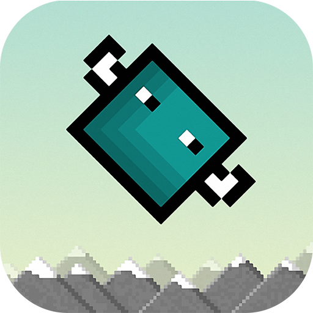

Cube Bird

Cube Bird is a fun free addictive old school arcade game that can be played for hours!
Your objective is to catch falling balls.
These balls can be either blue or red, but be careful, only catch the balls that match your cube bird's current color!
Catch the wrong one or miss a matching ball and its game over!
Keep in mind that your cube bird constantly switches colors as you catch balls!
How to play:
- Avoid catching the ball that's opposite of your cube bird's current color
- Careful! Don't let the ball that matches the color of your cube bird pass by!
Support or Contact
Having trouble? Contact support and we’ll help you sort it out.